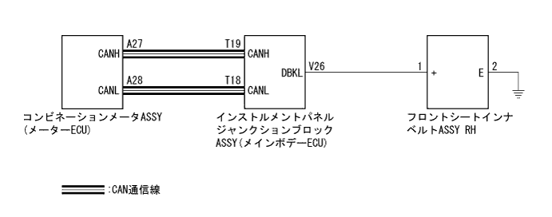
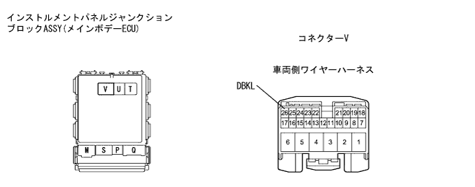
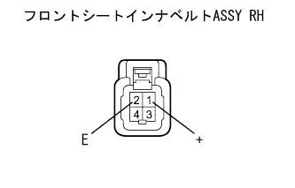

Seat Belt Warning System Driver Side Seat Belt Warning Light does not Operate |

| Step 1 | Perform TaSCAN Active Test |
Driver Seat Belt Warning Light Active Test
Using SST (TaSCAN), perform the Active Test to judge whether the system is normal and narrow down the malfunctioning area. (see)
| Item Name | Item Description | Reference Value |
|---|---|---|
| TelltaleNo.2 | Blink (1 Hz)/turn off driver seat belt meter indicator | Driver Seat Belt |
Check the result of the Active Test and proceed to the following destination.
| Result | Proceed to |
|---|---|
| Blinks at 1 Hz or goes off | A |
| Does not blink at 1 Hz or go off | B |
|
| ||||
| A | |
| Step 2 | Inspect Instrument Panel Junction Block Assembly (Main Body ECU) |
Pre-inspection Preparation

Disconnect the connector shown in the illustration from the instrument panel junction block assembly (main body ECU).
Resistance Inspection
Using SST (Toyota electrical tester), measure the resistance between each vehicle side connector terminal and body ground in each buckle state of the front seat inner belt assembly RH.
| Tester Connection (Terminal Symbol) | Condition | Standard |
|---|---|---|
| V-26 (DBKL) - Body ground | Tongue plate not inserted into buckle | Below 1 Ω |
| V-26 (DBKL) - Body ground | Tongue plate inserted into buckle | 10 kΩ or higher |
Check the inspection result and proceed to the destination below.
| Result | Proceed to |
|---|---|
| NG | A |
| OK | B |
|
| ||||
| A | |
| Step 3 | Inspect Front Seat Inner Belt Assembly RH |
 |
Resistance Inspection
Using SST (Toyota electrical tester), measure the resistance between the connector terminals in each buckle state.
| Tester Connection (Terminal Symbol) | Condition | Standard |
|---|---|---|
| 1(+) - 2(E) | Tongue plate not inserted into buckle | Below 1 Ω |
| 1(+) - 2(E) | Tongue plate inserted into buckle | 10 kΩ or higher |
|
| ||||
| OK | ||
| ||